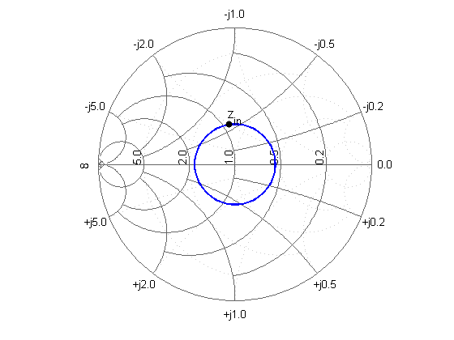
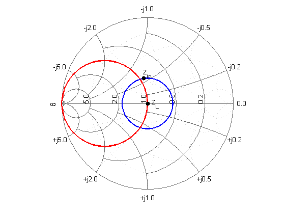
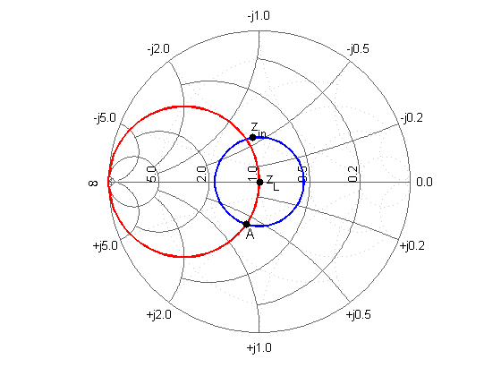
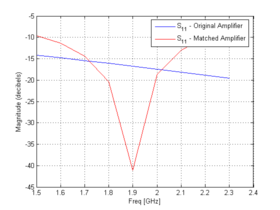
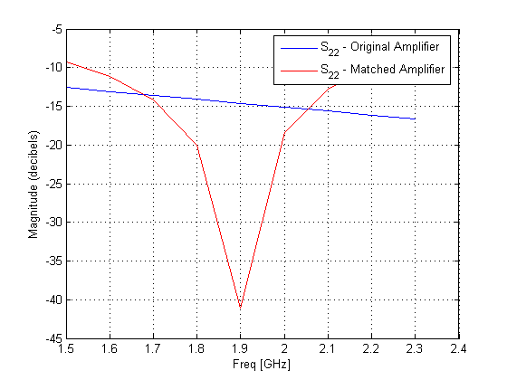
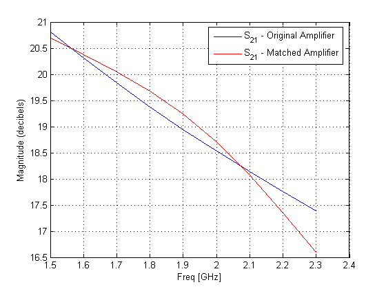

Input and output matching networks are an important part of amplifier design. This demo utilizes the Smith chart to find the input and output matching networks that will maximize the power delivered to a 50 Ohm load. This is accomplished by finding the required transmission line lengths for the single-stub matching networks. With the transmission line lengths found, the matching networks are cascaded with the amplifier and the results are visualized.
Create the amplifier, using the data in the data file 'samplebjt2.s2p'.
amp = rfckt.amplifier('File', 'samplebjt2.s2p');
Analyze the amplifier at the desired center frequency of 1.9 GHz and acquire the amplifier S-parameters, using the RFCKT methods ANALYZE and CALCULATE.
analyze(amp, 1.9e9); data = calculate(amp, 'S11', 'S12', 'S21', 'S22', 'none'); [s11, s12, s21, s22] = deal(data{1}, data{2}, data{3}, data{4});
Before proceeding with the design, check the stability of the amplifier. The necessary and sufficient conditions for unconditional stability are K greater than 1 and an absolute value of delta less than 1.
delta = s11*s22-s12*s21; K = (1-abs(s11)^2-abs(s22)^2+abs(delta)^2)/(2*abs(s12*s21)) abs_delta = abs(delta)
K =
1.0599
abs_delta =
0.6776
Since both conditions are satisfied, the amplifier is unconditionally stable. As a result, any passive source or load will produce a stable condition.
In order to design the input and output matching networks, the required source and load reflection coefficients for a simultaneous conjugate match must be found. Calculate the necessary load reflection coefficient for the design of the output matching network using the amplifier S-parameters.
B = 1+abs(s22)^2-abs(s11)^2-abs(delta)^2; C = s22-delta*conj(s11); gammaL = (B-sqrt(B^2-4*abs(C)^2))/2/C;
Define the SWR circle associated with the load reflection coefficient. The radius of this circle is given by the magnitude of the load reflection coefficient. Use this radius (center is the origin) to calculate points on the circle.
theta = 0:pi/50:2*pi; xin = abs(gammaL)*cos(theta); yin = abs(gammaL)*sin(theta);
Then, plot and label the desired input impedance at the output matching network (based on the load reflection coefficient) along with the SWR circle on a YZ Smith chart.
[hls, hs] = smithchart; set(hs, 'Type', 'yz'); hold on plot(xin, yin, '-', real(gammaL), imag(gammaL), 'k.', ... 'LineWidth', 2, 'MarkerSize', 20); text(-0.05, 0.35, 'z_{in}', 'FontSize', 12, 'FontUnits', 'normalized');
In order to find the required susceptance to move the load (50 Ohm) admittance to the SWR circle, define the constant conductance circle. To do this, define the normalized load impedance and the corresponding load admittance, with respect to a characteristic impedance of 50 Ohm for the transmission lines.
zL = 50/50; % zL = 1 yL = 1/zL; % yL = 1
The diameter and center of the circle can be found from the conductance value.
g = real(yL); % g = 1 d = -(g-1)/(g+1)+1; % d = 1 C = -1+d/2; % C = -1/2
Use the radius (half the diameter) and center of the constant conductance circle to calculate points on the circle.
xg = d/2*cos(theta)+C; yg = d/2*sin(theta);
Then, plot and label the load impedance point (located at the center of the Smith chart) along with the constant conductance circle associated with the load admittance on the Smith chart.
plot(xg, yg, 'r', 0, 0, 'k.', 'LineWidth', 2, 'MarkerSize', 20); text(0.05, 0, 'z_L', 'FontSize', 12, 'FontUnits', 'normalized');
With the SWR and constant conductance circles drawn, find the points of intersection corresponding to two possible solutions. These points can then be used to find the required susceptance values for the stub and are found by visual inspection. Since only one solution is necessary, choose the lower-half intersection point.
yA = 1+0.62j;
Plot and label this intersection point on the Smith chart using the reflection coefficient from the admittance value.
gammaA = (1/yA-1)/(1/yA+1); plot(real(gammaA), imag(gammaA), 'k.', 'MarkerSize', 20); text(-0.09, -0.35, 'A', 'FontSize', 12, 'FontUnits', 'normalized'); hold off
A single-stub matching network topology is used. The required lengths of the series transmission line and open-circuit stub can be found based on the intersection point. To accomplish this, first calculate the required susceptance value for the stub and the corresponding reflection coefficient.
jbSA = yA-yL; gammaSA = (1/jbSA-1)/(1/jbSA+1);
Then, the length of the stub can be found by calculating the angle of rotation from the y=0 (open-circuit) point to the calculated susceptance point.
ang = -angle(gammaSA)*180/pi; stubLengthA = ang/360/2
stubLengthA =
0.0883
Finally, find the required length of the series transmission line based on the angle of rotation from point A to Zin.
ang = 360-(angle(gammaL)-angle(gammaA))*180/pi; seriesLengthA = ang/360/2
seriesLengthA =
0.2147
The required lengths (in terms of wavelength) for the transmission lines based on the solution from point A are given above. Following a similar approach, the line lengths for the input matching network can be shown to be given by:
stubLengthin = 0.0763; seriesLengthin = 0.2266;
Build the circuit, using microstrip transmission lines with a characteristic impedance of 50 Ohms for the matching networks. To accomplish this, first check the impedance of a microstrip object (whose properties are set to the default values) at the design frequency of 1.9 GHz by analyzing the object.
hstubOutput = rfckt.microstrip;
analyze(hstubOutput, 1.9e9);
Z0 = get(hstubOutput, 'Z0')
Z0 = 50.2561
This characteristic impedance is very close to the desired impedance and will be used for this design.
In order to appropriately set the required transmission line lengths in meters, analyze the microstrip to get a phase velocity value, which will be necessary to calculate the wavelength.
phase_vel = get(hstubOutput, 'PV');
Set the appropriate transmission line lengths for the two series microstrip transmission lines necessary for the input and output matching networks.
hseriesOutput = rfckt.microstrip( ... 'LineLength', phase_vel/1.9e9*seriesLengthA); hseriesInput = rfckt.microstrip( ... 'LineLength', phase_vel/1.9e9*seriesLengthin);
Similarly, set the transmission line lengths and stub mode for the two stubs necessary for the input and output matching networks.
set(hstubOutput, 'LineLength', phase_vel/1.9e9*stubLengthA, ... 'StubMode', 'shunt', 'Termination', 'open'); hstubInput = rfckt.microstrip( ... 'LineLength', phase_vel/1.9e9*stubLengthin, ... 'StubMode', 'shunt', 'Termination', 'open');
Then, cascade the circuit elements and analyze the amplifier with and without the matching networks over the frequency range of 1.5 to 2.3 GHz in order to visualize and compare the results.
matched_amp = rfckt.cascade('Ckts', ... {hstubInput, hseriesInput, amp, hseriesOutput, hstubOutput}); analyze(matched_amp, 1.5e9:1e8:2.3e9); analyze(amp, 1.5e9:1e8:2.3e9);
In order to verify the simultaneous conjugate match at the input and output of the amplifier, plot S11 and S22 in dB for both circuits.
hls = zeros(1,2); hls(1) = plot(amp, 'S11', 'dB'); hold on; hls(2) = plot(matched_amp, 'S11', 'dB'); set(hls(2), 'Color', [1 0 0]); legend(hls, 'S_{11} - Original Amplifier', 'S_{11} - Matched Amplifier'); hold off
hls(1) = plot(amp, 'S22', 'dB'); hold on; hls(2) = plot(matched_amp, 'S22', 'dB'); set(hls(2), 'Color', [1 0 0]); legend(hls, 'S_{22} - Original Amplifier', 'S_{22} - Matched Amplifier'); hold off
Finally, plot S21 in dB for both circuits.
hls(1) = plot(amp, 'S21', 'dB'); hold on; hls(2) = plot(matched_amp, 'S21', 'dB'); set(hls(2), 'Color', [1 0 0]); legend(hls, 'S_{21} - Original Amplifier', 'S_{21} - Matched Amplifier'); hold off
The results for the matched amplifier can be compared with the expected transducer gain (in dB). From the S21 plot we see that the gain of the matched amplifier at 1.9GHz is between 19dB and 19.5dB. The expected gain is given by the formula:
Gt = 10*log10(abs(s21)/abs(s12)*(K-sqrt(K^2-1)))
Gt = 19.2407
which agrees with the actual result from the plot.